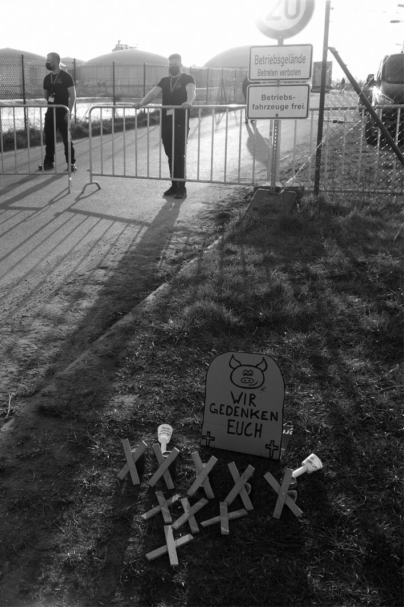

Stell´ Dir vor es brennt und keiner kommt raus!


Mit der „modernsten“ Ferkelfabrik Europas sind 49.771 Schweine bei lebendigem Leibe verbrannt.
Am 30. März 2021 versanken sie verschmolzen mit den Spaltenböden aus Plastik in den Gülletanks unter ihren Füßen am schönen Tollensetal.
Tonnenweise Sondermüll mußte abtransportiert und entsorgt werden.
„SCHWERELOS - Wohin verzieht sich der Rauch? Worum kreisen unsere Gedanken? Wo verorten wir uns jenseits von Filterblasen? Auf der Suche nach der Neuen Heimat auf einem alten Planeten sehen wir Filme zwischen Erkennen und Vergessen. Was von uns übrig blieb, zeigen wir beim... der NEUE HEIMAT film #17... mit Blick aufs Tollensetal“
Am Tag vor der Demo am 28.8.2021 gegen den Wiederaufbau der Ferkelfabrik lief zum Beginn des Filmfestes auf der Burg Klempenow der Film „Wem gehört mein Dorf?“ Dieser Dokumentarfilm zeigt Weltpolitik im Mikrokosmos Dorf: Hier streiten Einwohner unter der Dominanz eines Multimillionärs über die Zukunft eines beliebten Urlaubsortes auf der Insel Rügen im Vorfeld der letzten Kommunalwahl.
Der Streit über den Bau der Ferkelfabrik am Tollensetal dagegen begann schon 2006. Am 8. Mai wurde in Alt Tellin die weitere Gemeindeentwicklung in die Hände des hier damals noch unbekannten Agrarkriminellen Adrianus Straathof gelegt. Der NDR berichtete am nächsten Tag unter der Schlagzeile „Grünes Licht für umstrittene Schweinezuchtanlage in Alt Tellin - Investitionssumme liegt bei 25 Millionen Euro“
„In das Gelände einer alten, leer stehenden Schweinemastanlage sollen den Angaben zufolge 25 Millionen Euro investiert werden. Die Säue sollen mindestens einmal im Jahr je zehn Ferkel werfen. Die Planungen sähen vor, dass in dem 500-Seelen-Ort 35 bis 40 Arbeitsplätze entstehen, so der Bürgermeister. Der Kreis Demmin hat mit einer Arbeitslosenquote um 30 Prozent die höchsten Werte in ganz Deutschland.“
Doch das benannte Gelände war zu diesem Zeitpunkt kein Agrargelände mehr, sondern gehörte als Lagerplatz für Baustoffrecycling der Frau eines Gemeindevertreters. Dieser seit der Wende naturbelassene Lebensraum von Rebhühnern und Wildbienen mußte der Agrarindustrie weichen. Sogenannte „Schützenswerte Güter“ waren nicht relevant genug, um im Rahmen des geltenden BImSchG (Gesetz zum Schutz vor schädlichen Umwelteinwirkungen) zu überleben. Offiziell konnten alle Eingriffe kompensiert werden. Mehr als 700 Einwendungen gegen die Ferkelfabrik wurden abgearbeitet und das Privileg des vorfristigen Baubeginns wurde erteilt.
Ein Privileg für das als einzige Gegenleistung die massenhaft praktizierte Umsetzung von Tierquälerei steht. Die wesentlichen Grundlagen dazu in der industriellen Schweineproduktion sind technischer Art: Kastenstände und sogenannte Ferkelschutzbügel zur Fixierung der Sauen waren notwendige Rahmenbedingungen, um 250.000 mal im Jahr den Slogan des Straathofschen Familienbetriebes „Begeisterung für Ferkel“ mit Leben zu erfüllen. Begründet wurde dieses Privileg laut Genehmigungsbescheid mit der Imagekampagne „MV tut gut“.
Die schwarzrote Landesregierung hatte damit ihren Willen, die Veredlungswirtschaft zu stärken gegen den erklärten Willen der Einwohner (mehr als die Hälfte der Einwohner hatte gegen den Bau der Schweinefabrik ihre Unterschrift gegeben) durchgedrückt.
Jetzt nach der Tragödie will es keiner gewesen sein. Die CDU sei zuständig behauptet der amtierende Minister für Agrar und Umwelt...
Das alles und noch viel mehr ist nachlesbar in den Ausgaben 64 u. 72 der STADTGESPRÄCHE.
Es sind komprimierte Zusammenfassungen von 2011 u. 2013, die hier nicht wiedergekaut werden müssen. Denn seit 2009 gibt es auch eine kleine Dorfzeitung, als Antwort auf die Veredlungskampagne begleitete sie vielschichtig die Entwicklung am Tollensetal, seit 2018 online:
„Und 5 vor 12 in der letzten Novembernacht ist unsere angekündigte Internet-Präsenz ins Netz gegangen. Mit Beginn der Adventszeit sind auch wir angekommen im globalen Irrsinn: mensch-und-land.de ein Kaleidoskop der Vielfalt außerhalb urbaner Ballungszentren nicht nur für den Draufblick der Städter sondern ebenso für die verbliebenen Landbewohner. Überleben außerhalb urbaner Ballungszentren wird täglich schwieriger, nicht nur in der weiten Welt, wo es existenzielle Fluchtgründe gibt. Selbst im schönen Gesundheitsland MV, wo die Agrarindustrie zu Hause ist. Auch hier entsteht deutscher Druck auf die Welt und Widerstand dagegen. Mit der Installation der gewaltigen Ferkel – u. Gülleabrik am Tollensetal begann die Auseinandersetzung mit Agrarindustrie. mensch-und-land.de zeigt eine kleine überschaubare Region am TOLLENSETAL zum Verständnis für globale Zusammenhänge. Unsere Gesamtausgabe der vergangenen Jahre ist im Archiv komplett abrufbar. Per konstruktiver Suche können Themen hier konkret angesteuert werden.“
Dort im Journal sind auch die beiden Artikel der STADTGESPRÄCHE abrufbar. Ebenso eine Katastrophenausgabe mit dem einführenden Zitat von Umweltminister Backhaus: „Der verheerende Brand in Alt Tellin war ein Fanal für die gescheiterte Tierproduktion.“
Am 22.4.2021 ist in Alt Tellin ein bemerkenswerter Beschluss gefasst worden:
„Die Gemeindevertretung Al Tellin fordert von der Landesregierung die Verantwortung für den Großbrand am 30.03.2021 auf dem Gelände der Schweinezucht Alt Tellin GmbH zu übernehmen.“
Wie konnte es zu diesem Brand kommen, der fast 50.000 Schweinen das Leben kostete?
In den großen Medien wird im Vorfeld der Wahl so getan, als wäre das im Moment nicht zu klären.
Die Erforschung der Brandursache dauert einfach zu lange, erst danach könne geklärt werden, ob und was wieder aufgebaut wird. So eine richtig gründliche Aufklärung hat das Ergebnis über den ganzen Sommer bis in den Herbst verschoben. Aber darum kann es doch nur gehen, wenn der Wiederaufbau im Focus der Wünsche steht.
Wie kann es sein, dass die Frage, warum die Tiere nicht gerettet werden konnten, so doll hintenansteht?
Ferkelfabriken sind nun mal die Grundlage des Schweinesystems, also auch der Exportwirtschaft.
Und so steht nun der damalige sofortige Vollzug des Baubeginns, gegen den die Brandschutzklage des BUND keine aufschiebende Wirkung hatte, neben dem immer noch praktizierten Kontinuums des Aussitzens. Das Verwaltungsgericht Greifswald war bis heute nicht in der Lage, darüber zu entscheiden, ob die Tiere in der Ferkelfabrik bei einem Brand gerettet werden können oder nicht. Immer neue Informationen wurden dazu eingefordert und die Aktenberge wurden letztendlich nicht überwindbar. Auch nach dem Brand scheint immer noch keine Erlösung der armen Richter in Sicht.
Inzwischen aber hat die Weltgesundheitsorganisation ein neues Frühwarnzentrum in Berlin eröffnet.
Das Zentrum soll mithilfe von künstlicher Intelligenz Unmengen von Daten analysieren. Dabei geht es etwa um Tiergesundheit, ungewöhnliche Krankheiten bei Menschen, Verhaltensänderungen der Menschen, Klimawandelfolgen oder Bevölkerungsverschiebungen. Modelle sollen helfen, mögliche Risiken besser einzuschätzen. Die Bundesregierung hat dazu 30 Millionen Euro zur Verfügung gestellt. - Wozu eigentlich, wenn die vorhandenen Warnungen in den Wind geschlagen werden?
Massentierhaltungsanlagen sind Brutstätten für Pandemien und Multiresistenzen. Die EU hat ihren Fleischexport auch in diesem Jahr wieder steigern können. Der Bezug zum Klimawandel wird nicht nur bei schwindendem Regenwald wegen Tierfutteranbau sichtbar. Frühwarnsysteme für Unterernährung haben daran auch nichts ändern können.
Und was ist mit Afghanistan? Der Vizepräsident der Union der Afghanistanveteranen in Russland hatte schon 2009 die USA vor den Folgen militärischer Eingriffe in innere Angelegenheiten gewarnt. Trotz dieser Frühwarnung gibt es die Überlegungen vom EU-Chefdiplomat, mit 50.000 EU-Soldaten am Hindukusch für Ordnung sorgen zu wollen. - Welch ein Irrsinn.
In Dänemark wurden alle Wildschweine abgeschossen. Fleischexport soll nicht durch Afrikanische Schweinepest gefährdet werden...
Vor der Brandkatastrophe in der Schweinefabrik gab es keinen Plan B. Es wurde davon ausgegangen, dass ein Feuer auf 5 x 5 Metern (hochgerechnet auf die gesamte Anlage) nach unter 10 min von allein ausgehen würde. Die Realität sah ganz anders aus. Die Rauchsäule erinnerte an brennende Ölfelder im Irakkrieg. Kein Wunder, waren die Spaltenböden doch aus Plastik und nicht aus Beton. Kilometerweit zog sich das Giftgas Richtung Anklam.
Wo bleibt eigentlich die Kompensation für diesen Eingriff in unsere „Schützenswerten Güter“?
Da ist noch eine Rechnung offen. Ein Klimawald als Kompensation auf der Fläche von der die Rauchsäule aufstieg wäre das mindeste. Dem Umweltminister ist der Vorschlag bei seinem Besuch der Gemeinde Alt Tellin einen Monat nach der Tragödie gemacht worden. Zwei Monate nach dem Brand hat der für den Brandschutz zuständige Landkreis Vorpommern-Greifswald dann die Schadstoffe gemessen und für nicht relevant erkannt. Aus Sicht des dazugehörigen Landrats Herrn Sack war das alles keine Katastrophe, denn die Bio-Gasanlage ging nicht in die Luft. Die steht noch da und will gefüttert werden. Die Gülle kommt derzeit aus Medow, aus einem anderen Betrieb, der auch zur TERRA GRUNDWERTE AG gehört...
Herr Sack will gerne Ministerpräsident für die CDU werden und Frau Schwesig ist die amtierende SPD-Frau für MV.
Doch die entscheidende Triebkraft im Kapitalismus ist immer noch der Profit und die Politiker lassen sich wählen, um mit passenden Gesetzen diesen möglichst barrierefrei zu flankieren.
Wenn wir das alles noch weiter erdulden, wird irgendwann das letze Raumschiff ablegen und fast niemand wird zu den 1.361 geretteten Glücksschweinen gehören, die den Brand auf der Erde entkommen sind um auf dem Mars in die schöne neue Welt zu starten.
der Beitrag wurde schon im September 2021 in STADTGESPRÄCHE Ausgabe 104 veröffentlicht